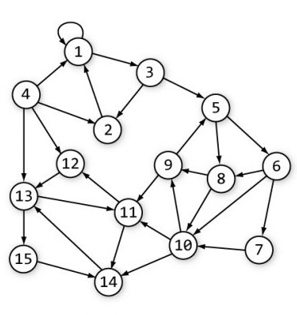

Tech
How does a search engine work?
A prerequisite for
any modern search engine is a current map of the internet.
Search engines employ “spiders” that crawl through the web, following every link they find,
in order to find and update addresses of pages that are indexed in the search engine's catalog.
Search engines employ “spiders” that crawl through the web, following every link they find,
in order to find and update addresses of pages that are indexed in the search engine's catalog.
When performing a web search, the searching is done through the search engine’s
catalog of content it has crawled through rather than the content at the source itself.
This catalog, essentially a database, is the second component of a search engine.
The contents of the web are constantly changing, so it’s crucial that search engines continually
crawl through previously indexed pages as the catalog continually becomes outdated.

catalog of content it has crawled through rather than the content at the source itself.
This catalog, essentially a database, is the second component of a search engine.
The contents of the web are constantly changing, so it’s crucial that search engines continually
crawl through previously indexed pages as the catalog continually becomes outdated.
A core factor in the Google search engine is page relevancy, or ‘PageRank’, which is the number of links that point toward
it. Google determines a page’s importance/quality based on these ‘backlinks’, which can be thought of roughly
as a citation on some other website. A backlink from a page with high PageRank has a heavier weight to it
than a backlink from a page with low PageRank. Google, along with most other modern search engines, uses PageRank
to help determine the order in which to display search results. PageRank does not depend on search query,
or the page’s content apart from as far as the content creates or receives backlinks. This method is a cornerstone
of many modern search engines but is also subject to exploitation through ‘linkspam’, which means purchasing
a massive quantity of backlinks regardless of where they come from.

Another factor that will affect your search results is the concept of personalization. In the early 2000’s Google introduced
this concept to its users with accounts, and subsequently expanded the program to include all users regardless
of whether they turned it on or were even signed in to a Google account. The idea is simple: maintain a cookie
in a user’s browser that collects data related to location, search history, web history, and social network
history. This information is then used as ‘context’ to return listings more related to the user’s history.
One problem with this is that it minimizes the user’s discovery of new information and opinions and contributes
toward the ‘echo chamber’ effect. This was taken a step further in 2009 when Google began to customize search
results based on a user’s ‘social circle’. The usefulness of this rests on the assumption that one’s associates
share common interests, and it has been criticized as exacerbating the previous problems mentioned regarding
personalization.
The last feature of Google search that we’ll examine is search suggestions. Introduced in 2008, this feature sought to save
time when performing searches by offering possible completions of partial search queries. The suggestions vary
based on how people actually search, including a heavier weight on your own searches, and take into account
location and language. An interesting result of this is that Google may be lobbied to remove suggestions that
are seen as distasteful or unfair for particular groups. Some may be easier to understand, such as the removal
of suggestions toward hateful speech (even if it’s commonly searched). Others are less easy to understand. In
2010, for example, Google was sued to remove the word “arnaque” (meaning scam) from the suggestions related
to a controversial French company. A similar legal case was taken up by a man to have the suggestion “rapist”
from appearing next to his name. Does this constitute censorship?